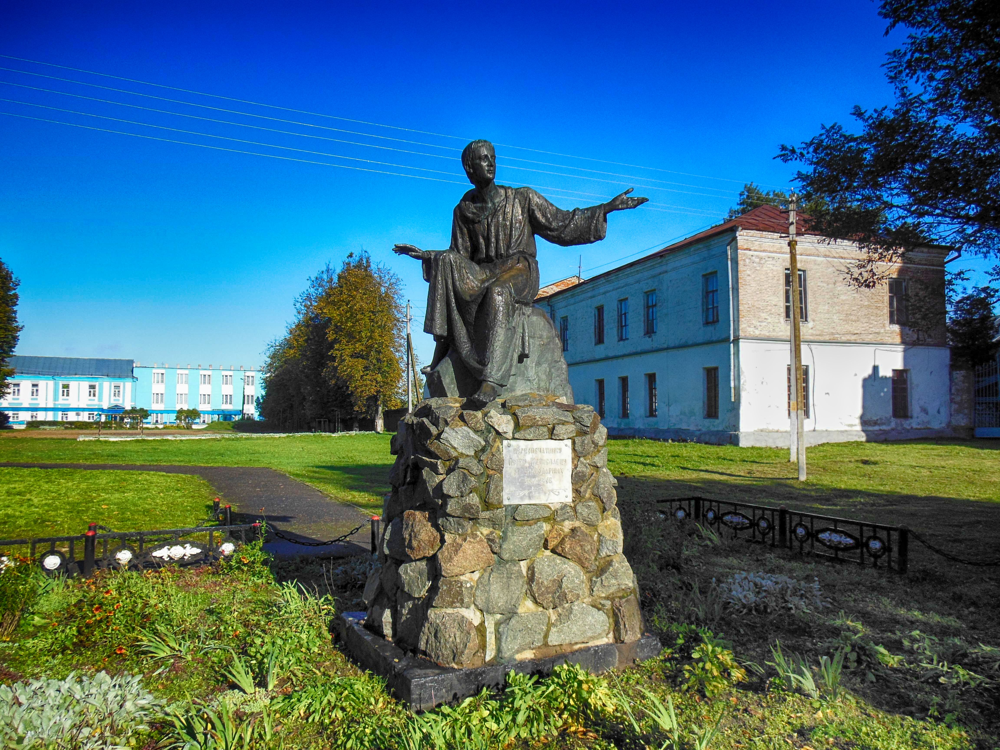
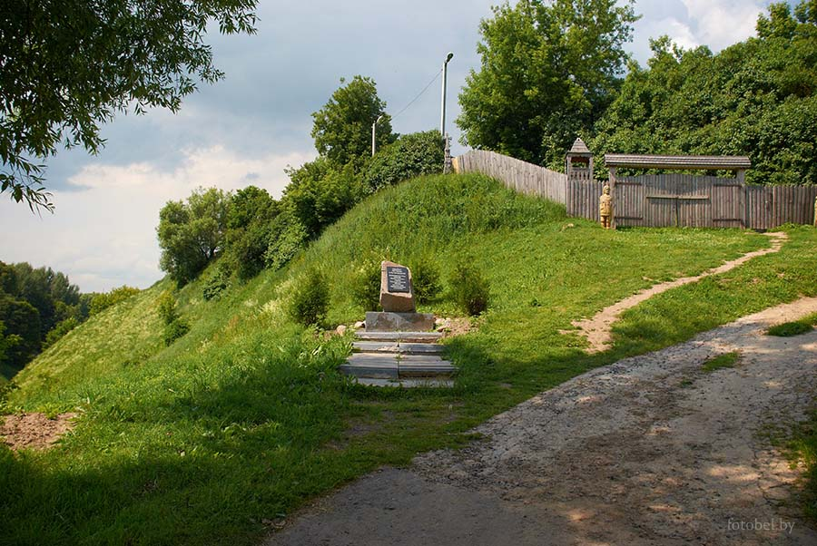
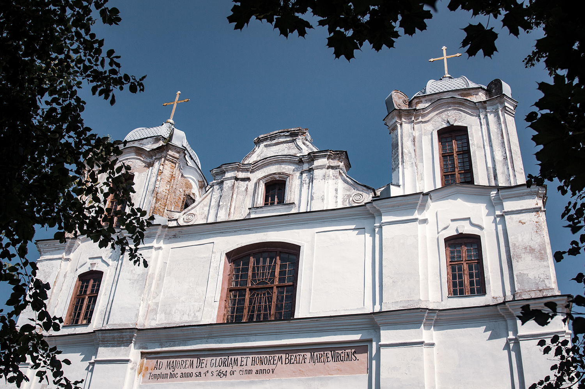
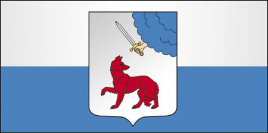
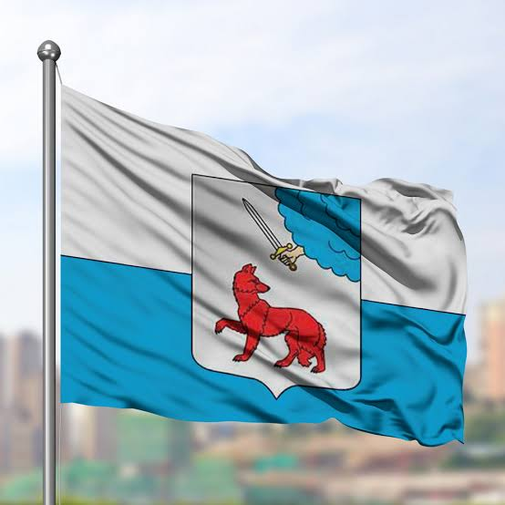
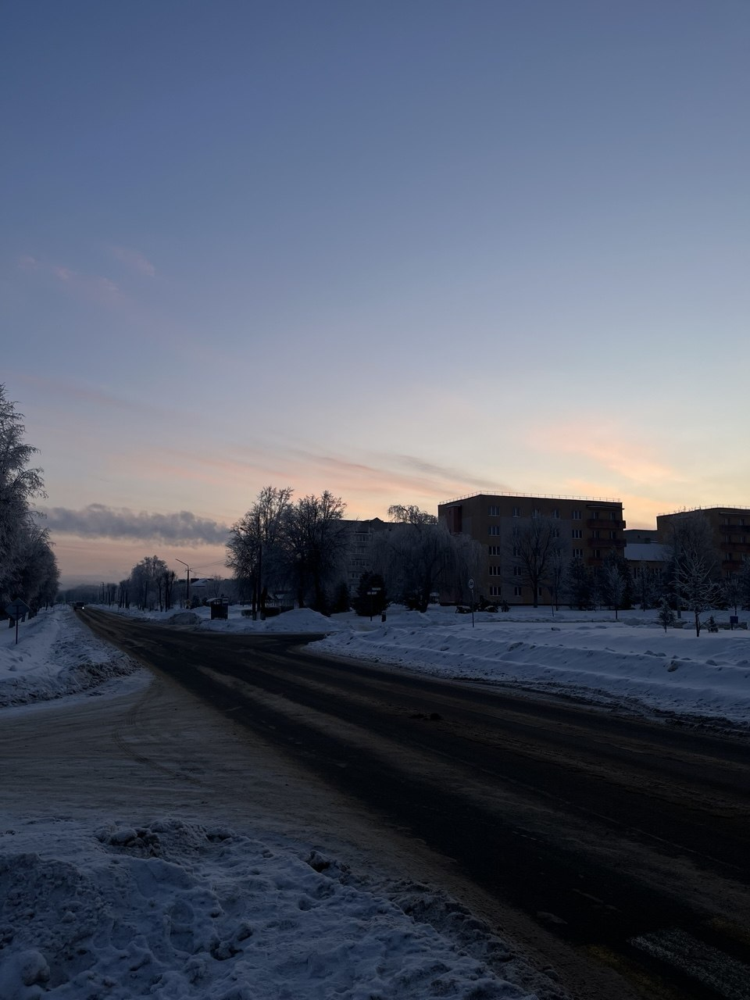
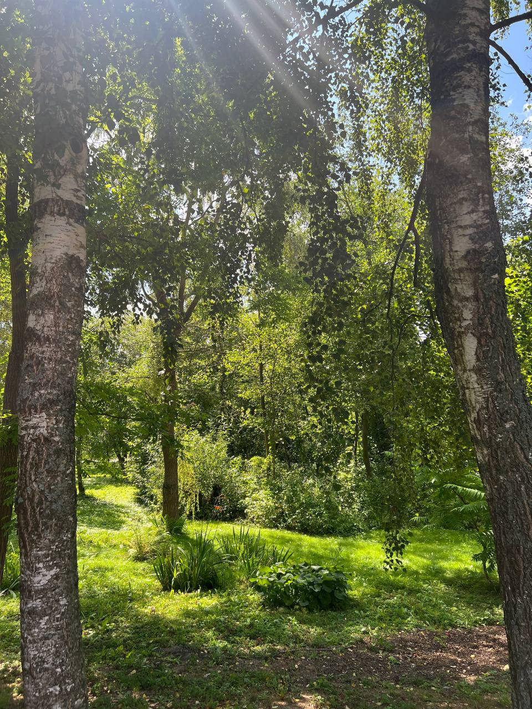
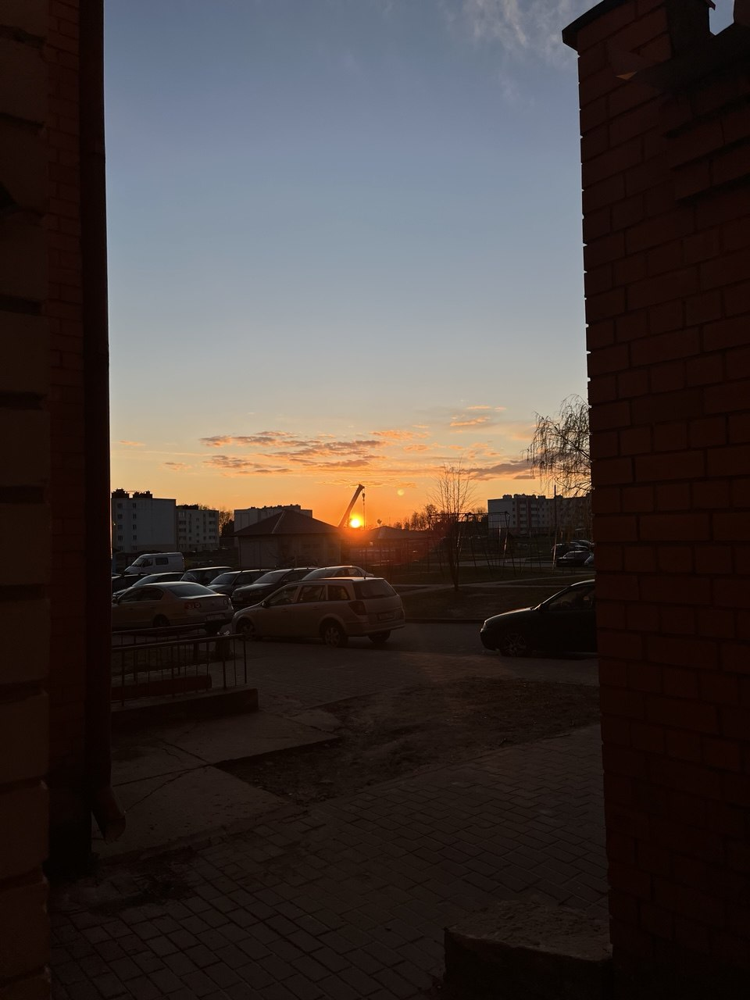
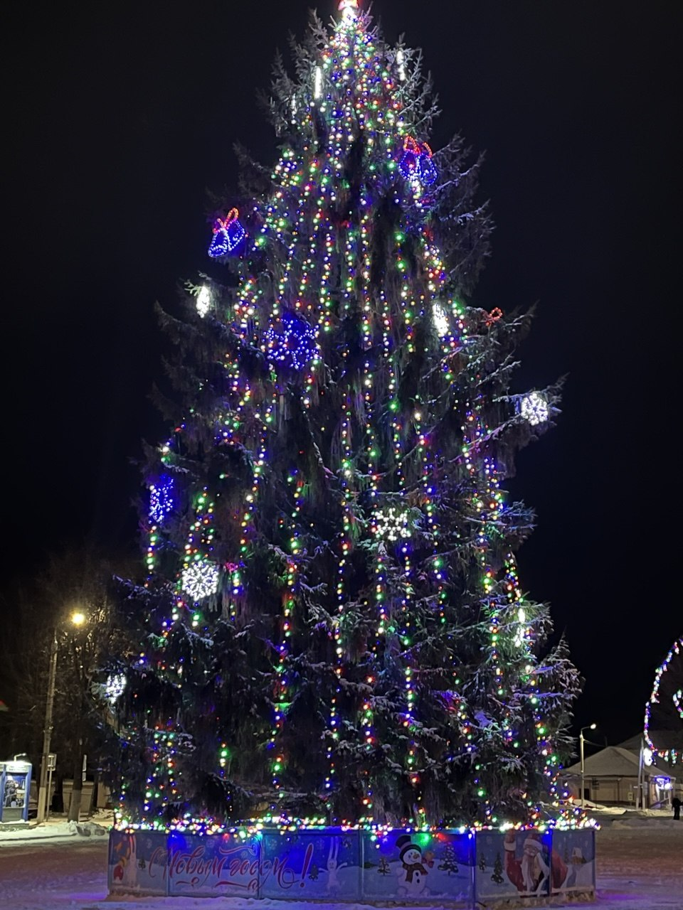

🏰 МСТИСЛАВЛЬ — ГОРОД ИСТОРИИ И ЛЕГЕНД
Добро пожаловать в Мстиславль! Это один из древнейших городов Беларуси, расположенный в Могилёвской области. За свою многовековую историю город пережил войны, смену государств, развитие торговли и ремёсел, но сохранил свою особенную атмосферу.
Мстиславль — это место, где история буквально встречается с современностью. Здесь рядом могут находиться современные здания, старинные храмы, тихие улицы и места, связанные с событиями далёкого прошлого.

📜 1. ИСТОРИЯ ГОРОДА
Возникновение Мстиславля
История Мстиславля начинается в глубокой древности. Первое летописное упоминание о городе относится к 1135 году. Своё название город получил в честь князя Мстислава Владимировича.
Благодаря своему расположению Мстиславль постепенно стал важным центром региона. Через эти земли проходили торговые пути, поэтому здесь развивались ремесло и торговля.
Мстиславль в Средние века
В Средние века город имел большое стратегическое значение. Его расположение делало его важным пунктом на восточных территориях Великого княжества Литовского.
В городе существовал укреплённый замок. Именно с ним связана одна из самых известных исторических частей Мстиславля — Замковая гора.
Представьте себе средневековый город: деревянные дома, торговые площади, ремесленные мастерские, крепостные стены и люди, которые каждый день занимались торговлей и ремеслом. Именно таким когда-то был Мстиславль.
Город в разные эпохи
На протяжении своей истории Мстиславль входил в состав разных государств. Город неоднократно становился участником военных событий и переживал тяжёлые времена.
Несмотря на разрушения, город продолжал развиваться. Постепенно формировалась его архитектура, появлялись каменные здания, храмы, школы и другие учреждения.
Мстиславль сегодня
Сегодня Мстиславль — районный центр Могилёвской области. Это спокойный небольшой город, который старается сохранять своё историческое наследие.
Прошлое является одной из главных особенностей современного Мстиславля.
🏛 2. ДОСТОПРИМЕЧАТЕЛЬНОСТИ
Несмотря на небольшие размеры, Мстиславль интересен большим количеством исторических мест.
🏰 Замковая гора
Одно из наиболее известных исторических мест города. Именно здесь находилось древнее укрепление. Сегодня с Замковой горой связаны многочисленные исторические события и легенды.

⛪ Иезуитский костёл Святого Михаила Архангела
Одним из наиболее узнаваемых исторических зданий Мстиславля является костёл Святого Михаила Архангела.
Это памятник архитектуры, который напоминает о богатой и разнообразной истории города.

⛪ Кармелитский костёл
Ещё одна важная достопримечательность города — костёл Успения Пресвятой Девы Марии. Он является частью исторического архитектурного наследия Мстиславля.
🏘 Старые улицы города
Прогулка по Мстиславлю может стать настоящим путешествием во времени. Некоторые улицы и здания позволяют представить, как выглядел город в прошлые столетия.
🛡 3. СИМВОЛЫ МСТИСЛАВЛЯ
Герб города
Герб является одним из главных официальных символов Мстиславля. Он связан с историей города и отражает его прошлое.

Флаг Мстиславля
Флаг является ещё одним официальным символом города. Вместе с гербом он используется для представления Мстиславля на официальных мероприятиях.

🗺 4. ГДЕ НАХОДИТСЯ МСТИСЛАВЛЬ?
Мстиславль расположен в Могилёвской области Республики Беларусь, недалеко от границы с Российской Федерацией.
Такое расположение на протяжении истории имело большое значение. Город находился недалеко от важных путей, связывавших разные территории.

📰 5. ЧТО ПРОИСХОДИТ В ГОРОДЕ?
Жизнь современного Мстиславля не ограничивается историей. В городе регулярно проходят различные мероприятия, праздники, спортивные соревнования и культурные события.
🎉 Праздники и мероприятия
- Городские праздничные мероприятия.
- Культурные фестивали.
- Спортивные соревнования.
- Концерты и выступления.
- Мероприятия для детей и молодёжи.
- Выставки и культурные программы.
📰 Где искать актуальные новости?
Новости о жизни района можно найти на официальном сайте Мстиславского районного исполнительного комитета.
Официальный сайт Мстиславского района
🏙 6. МСТИСЛАВЛЬ СЕГОДНЯ
Современный Мстиславль — это небольшой районный центр, где проживают люди разных поколений.
🏫 Образование
В городе работают учреждения образования, где дети получают знания и принимают участие в различных культурных и спортивных мероприятиях.
🏥 Медицина
В Мстиславле работают медицинские учреждения, которые обеспечивают жителей необходимой медицинской помощью.
🛒 Торговля и услуги
В городе работают магазины, предприятия общественного питания и различные организации сферы услуг.
🏭 Экономика
Экономика района связана с промышленностью, сельским хозяйством, торговлей и другими видами деятельности.
Для небольшого города важную роль также играют учреждения образования, культуры, здравоохранения и государственные организации.
🌳 7. ПРИРОДА И ОКРЕСТНОСТИ
Мстиславль интересен не только архитектурой. Вокруг города находятся природные территории, поля, леса и водоёмы.
Природа Беларуси особенно красива летом и осенью. Поэтому прогулка по окрестностям Мстиславля может стать хорошим способом отдохнуть от городской суеты.

👻 8. ЛЕГЕНДЫ И ТАЙНЫ МСТИСЛАВЛЯ
Как и многие древние города, Мстиславль связан с различными легендами и рассказами.
Старые замки, подземелья, древние холмы и разрушенные укрепления всегда становились источниками историй, которые передавались из поколения в поколение.
Особенно много подобных историй связано с Замковой горой. Даже сегодня трудно представить древний Мстиславль без загадочных рассказов о его прошлом.
История города становится ещё интереснее, когда факты дополняются легендами.
⭐ 9. ИНТЕРЕСНЫЕ ФАКТЫ
- Мстиславль впервые упоминается в летописи в 1135 году.
- Город получил своё название в честь князя Мстислава.
- Мстиславль является одним из древних городов Беларуси.
- В городе находится историческая Замковая гора.
- Мстиславль имеет большое количество памятников архитектуры.
- Город находится в Могилёвской области.
- История Мстиславля связана с Великим княжеством Литовским.
- Город пережил множество исторических событий.
- Сегодня Мстиславль является районным центром.
- Историческое наследие является важной частью современной жизни города.
📸 10. МСТИСЛАВЛЬ МОИМИ ГЛАЗАМИ
У каждого города есть своё настроение. Для одного человека Мстиславль — это древняя история, для другого — родной дом, друзья и знакомые улицы.
Здесь можно разместить фотографии, сделанные лично вами:
- любимая улица;
- любимое место для прогулок;
- вид на город;
- фотография природы;
- интересное здание;
- город во время праздника.


💭 11. ПОЧЕМУ СТОИТ ПОСЕТИТЬ МСТИСЛАВЛЬ?
Если вам нравятся древние города, история и необычная архитектура, Мстиславль может стать интересным местом для путешествия.
Здесь не обязательно искать огромные торговые центры или небоскрёбы. Главная особенность города — его история, спокойствие и атмосфера.
Можно подняться на Замковую гору, посмотреть на старинные здания, прогуляться по улицам, сделать фотографии и просто представить, каким был этот город несколько сотен лет назад.
Мстиславль — это город, который интересно не только увидеть, но и почувствовать.
❤️ МОЙ ГОРОД — МСТИСЛАВЛЬ
Мстиславль — это не просто точка на карте Беларуси. Это город с характером, историей и своим неповторимым обликом.
Его прошлое напоминает нам о событиях, которые происходили много веков назад, а современная жизнь показывает, что город продолжает развиваться.
У каждого города есть своя история. История Мстиславля насчитывает почти девять веков.
Спасибо за посещение моего сайта!
Полезные ссылки
Мстиславский районный исполнительный комитет
Беларусь — официальный туристический портал
© Мстиславль — город истории, культуры и традиций